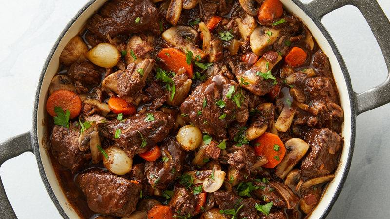

Beef Bourguignon

Description
Julia Child’s Beef Bourguignon (Bœuf Bourgignon in French) is a world wide loved classic for a reason. This is one recipe where you want to take your time cooking it, drinking a glass of wine or two while preparing it, and show it a lot of love. Every step is worth it.
Ingredients
- 1 tablespoon extra-virgin olive oil
- 6 ounces bacon, roughly chopped
- 3 pounds beef brisket, trimmed of fat, cut into 2-inch chunks
- 1 carrot slice 1/2-inch thick
- 1 large onion diced
- 6 cloves garlic, minced
- 1 pinch coarse salt and ground pepper
- 2 tablespoons flour
- 12 small pearl onions
- 3 cups red wine like Merlot, Pinot Noir, or a Chianti
- 2-3 cups beef stock
- 2 tablespoons tomato paste
- 1 beef boullion cube
- 1 teaspoon fresh thyme, finely chopped
- 2 tablespoons fresh parsley, finely chopped
- 2 bay leaves
- 1 pound fresh small white or brown mushrooms, quartered
- 2 tablespoons butter
Directions
- Preheat oven to 350°F (175°C).
- Heat the oil in a large dutch oven or heavy based pot. Sauté the bacon over medium heat for about 3 minutes, until crisp and browned. Transfer with a slotted spoon to a large dish and set aside.
- Pat dry beef with paper towel; sear in batches in the hot oil/bacon fat until browned on all sides. Remove to the dish with the bacon.
- In the remaining oil/bacon fat, sauté the carrots and diced onions until softened, (about 3 minutes), then add 4 cloves minced garlic and cook for 1 minute. Drain excess fat (leave about 1 tablespoon in the pan) and return the bacon and beef back into the pot; season with 1/2 teaspoon coarse salt and 1/4 teaspoon ground pepper. Sprinkle with flour, toss well and cook for 4-5 minutes to brown
- Add the pearl onions, wine and enough stock so that the meat is barely covered. Then add the tomato paste, bullion and herbs. Bring to a simmer on the stove.
- Cover, transfer to lower part of the oven and simmer for 2 to 3 hours, or until the meat is fall apart tender (adjust the heat so that the liquid simmers very slowly).
- In the last 5 minutes of cooking time, prepare your mushrooms: Heat the butter in a medium-sized skillet/pan over heat. When the foam subsides, add the remaining 2 cloves garlic and cook until fragrant (about 30 seconds), then add in the mushrooms. Cook for about 5 minutes, while shaking the pan occasionally to coat with the butter. Season with salt and pepper, if desired. Once they are browned, set aside.
- Place a colander over a large pot (I do this in my clean kitchen sink). Remove the casserole from the oven and carefully empty its contents into the colander (you want to collect the sauce only). Discard the herbs
- Return the beef mixture back into the dutch oven or pot. Add the mushrooms over the meat.
- Remove any fat off the sauce( if any) and simmer for a minute or two, skimming off any additional fat which rises to the surface.
- You should be left with about 2 1/2 cups of sauce thick enough to coat the back of a spoon lightly.
- Taste for seasoning and adjust salt and pepper, if desired. Pour the sauce over the meat and vegetables.
- If you are serving immediately, simmer the beef bourguignon for 2 to 3 minutes to heat through.
Garnish with parsley and serve with mashed potatoes, rice or noodles.